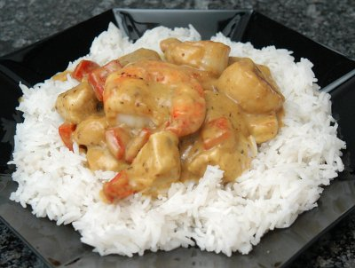

| Zutaten für 4 Personen: | |
| 300 g | Carolina Reis |
| Salz | |
| 2 | Poulet Schnitzel |
| Geflügel Würzmischung | |
| etwas | Mehl |
| 250 g | filetierter Seeteufel oder "Bäggli" |
| Fisch- Würzmischung | |
| 2 | verschiedenfarbige Peperoni |
| 1 | Banane |
| 1 Beutel | Curry-Sauce |
| Erdnussöl | |
| 150 g | Krevetten |
| Schnittlauch | |
Reis in Salzwasser kochen. Poulet würfeln, würzen und mehlen. Fisch würzen. Peperoni in Streifen und Banane in Stücke schneiden.
Currysauce nach Beutelvorschrift zubereiten.
Poulet, dann Fisch und Krevetten braten. Warmstellen. Peperoni dünsten, Banane braten.
Reis anrichten. Poulet, geschnittenen Fisch, Krevetten, Peperoni und Sauce darauf geben und mit Schnittlauch garnieren.
Migros Rezepte vom Küchenchef
Getestet am 1.1.97 von RE. Super, ergibt aber riesige Portionen! Die Curry Sauce aus den Migros-Beuteln ist nicht wahnsinnig.
Am 12.4.2010 mit Jakobsmuscheln und einer grossen Krevette sowie Thommy Currysauce zubereitet. Schmeckt sehr gut. RE
@LINKBACK_TAG@ @WAKELOCK@